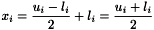

[Used by APPSPACK::Solver::initializeBestPointPtr(). Also accessed by APPSPACK::Cache::Manager::Manager().]
 .
.

© Sandia Corporation | Site Contact | Privacy and Security

Generated on Wed Dec 14 18:41:05 2005 for APPSPACK 4.0.2 by
 1.3.8 written by Dimitri van Heesch,
© 1997-2002
1.3.8 written by Dimitri van Heesch,
© 1997-2002